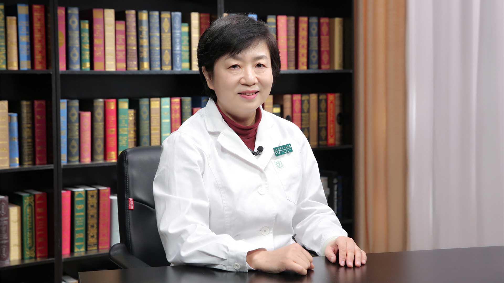

2.8 抽动症¶
陆小彦主任医师¶

首都医科大学附属北京儿童医院神经内科、精神科主任医师；中华医学会心身医学分会委员；中华医学会中西医结合委员会委员；中国心理卫生协会儿童心理卫生专业委员会委员。
学术成就： 开创了国内非药物治疗儿童心理障碍新方法，发表相关论文5篇；参与国内外多中心ADHD临床研究8项；参与院内首发基金项目2项；已在核心期刊发表学术论文20余篇，参编著作3部；网络发表科普文章109篇。
专业特长： 儿童青少年各种行为问题的咨询、评估和治疗。尤其擅长儿童多动症、抽动症、情绪障碍和心身疾病的诊断和治疗。
什么是抽动症？不自主的挤眉眨眼、耸肩摇头会是抽动症吗？¶
什么是抽动症？不自主的挤眉眨眼、耸肩摇头会是抽动症吗？
（采访）主任，什么是抽动症呢？
抽动症是一组起源于儿童期的，以抽动为主要表现形式的一组疾病。
这个病首先是由法国医生在1885年进行详细报道的。我们国家近几十年开始逐渐重视这个病，研究这个病。
这个病从临床发作来说有一些特点，它主要是一组肌肉、肌群快速的、不自主的、多发的、重复的、反复的、无目的性的抽动。
表现形式为发声抽动、运动抽动、还有感觉性抽动。当然以运动抽动为主，有些孩子同时伴有其他两种。
根据临床表现，发作类型和持续的时间，在临床上分为三个主要类型。
第一个就是一过性抽动，也叫短暂性抽动。
第二个类型就叫慢性抽动，可以有运动抽动，或者发声抽动，这两种形式不同时出现。
第三种形式叫多发性抽动，也叫Tourette综合征，根据法国医生的名字而命名的。既往我们叫抽动秽语综合征，目前不太提了。
因为这个名词好像都要有秽语，其实秽语在这个病里，可能占的比例比较小，也就30%左右，有些孩子没有秽语。
如果说秽语征，很多家长觉得这个病有贬义的意思。
这个病从流行病学来说，因为各个分型不同，它的患病率也不一样。有一过性抽动的孩子非常多。
统计大规模的人群调查，其实还很难做。
关于这个的数据研究报道比较多，一过性抽动有5-20%；慢性抽动1-2%左右；多发性抽动、Tourette综合征大概有0.5%左右，相对比较少，但是它是比较重。
这三个主要类型是一个谱系，一过性抽动可以发展为慢性抽动，随着病情的发展演变，慢性抽动也可能发展为多发性抽动，也叫Tourette综合征。
在临床上还有一些少见的类型，比如说迟发性的抽动障碍，可能在成年期发病。这个在儿科相对较少，在成人医院精神专科里可以见到。
还有一种类型就是继发性的抽动。
比如说它是外伤引起的，感染引起的，脑炎后，或者它是由于遗传因素，一些相关疾病引起的等等。
还有一种类型在临床上比较棘手，叫难治性的抽动障碍。
就是经过多种药物，治疗一年以上，症状没有明显缓解，这一类比较少见。最多见的就是临床上那三种类型。
（采访）一过性的抽动症就是只发生一次吗？
很多家长是这么想的，其实不是这样的。
一过性抽动，实际上是一个临床分型，也叫短暂性抽动、一过性抽动或者是习惯性痉挛等等，它的不同名称。
这个病是一个短暂的发作，可能持续四周以上，但是不到一年，从病程来说是这样的。
它的临床表现稍微轻一点，但是也有多发的症状。
比如说有运动抽动，也有发声抽动，可以出现挤眉、眨眼、耸肩、摇头、四肢抽动，也可以出现单纯的发声，但都是以简单的抽动为主。
它是单一的，但是它可以有抽动、有发声，也可以有运动抽动和发声抽动。
（采访）孩子如果出现了频繁眨眼这样的情况，是不是就表明这是抽动症的信号呢？
确实是这样的。
在临床中，比如说一个发烧的病人，很可能是一个感染性疾病，发烧就是它的一个信号。
如果一个孩子长期情绪不好，不开心，可能是一个心理疾病的信号。
眨眼也是这样的，如果一个孩子频繁眨眼，控制不住，他可能患了抽动症了。
抽动症往往是不自主的、快速的、无目的的，一组或多组的肌肉和肌群的抽动。
（采访）家长如果看到孩子有这种频繁眨眼的情况，他应该怎么办？如果到医院要挂哪个科室？
如果家长发现孩子有这种问题，应该尽早及时去看专科门诊。
比如说可以去儿童医院，专科医院看专病门诊，一般首选精神科或者神经内科。
儿童为什么会得抽动症？会遗传吗？¶
儿童为什么会得抽动症？会遗传吗？
（采访）儿童为什么会得抽动症呢？
这涉及到病因了，其实这是蛮复杂的，到目前为止抽动症的病因还不是十分清楚。
但是目前的研究发现，无论从临床还是试验的研究，基础的研究表明这个病和遗传关系比较密切。
同时它也和神经发育不好、神经发育障碍、神经递质紊乱、神经解剖结构异常、神经免疫等因素相关。
在这个基础上，社会心理因素起到了一个比较重要的作用，起到一个诱发、促发的作用。
有基础的问题，比如说遗传，遗传率比较高。就是说父母或者是他的三代里头都会有这种病人。
遗传学研究发现这个病有家族聚集性。在问诊中会详细问到，家里人有没有这个病？
多半在60%左右的家庭中可以有阳性的家族史。
不管他父亲或者母亲，或者他的父系、母系，这些人群当中会有聚集的现象。
多的时候一家可能有四五个人，比如说舅舅，或者他的妈妈、姑姑、叔叔等等，都有这个病，所以它跟遗传有关系。
从双生子的研究中，也会发现同卵双生的孩子，他的共病率是非常高的。
在双胞胎里头大概同时得病的概率有77%左右，说明这个病和遗传因素相关性非常高。
（采访）一般什么样的小孩子比较容易得抽动症？
一般在学龄期儿童，这一类病是起病于儿童期，多在5-7岁的孩子比较多见。
学龄期儿童有的10岁左右发病，一般在青春期前就可以出现。
在临床上可以见到1岁左右的孩子，甚至6、7个月都可以发病，发病年龄可能越来越小。
抽动症有哪些表现？¶
抽动症有哪些表现？
（采访）孩子如果得了抽动症，他都会有哪些症状表现呢？
因为抽动症是一种精神类疾病。精神类疾病主要是通过现象学来诊断，就是从症状上判断。
这个症状是反复的、发作性的、周期性的特点，是一种抽动的形式。
比如说单组的肌肉或者多组的肌肉抽动、表现在面部可以出现眨眼、耸鼻、咧嘴、挤眉眨眼、做鬼脸。
出现在颈部，表现为扭脖子、点头、摇头。
有的时候孩子发作非常频繁，很痛苦，脖子疼，可以引起颈椎出问题。
还可以出现耸肩、四肢的抖动，下蹲、蹦跳各种复杂的抽动形式。
还可以出现发声，可以听到、看到，所以很容易识别。
家长最先看到，同学、老师也可以看到，说这孩子怎么回事？
它是一种发作，是一种肌肉或者肌群的抽动，但不是抽风，所以家长不用紧张。
如果发现及时就诊，看专科门诊就可以。
（采访）孩子这些症状表现的话，早期和后期的这些症状，会不会有不一样的地方？
应该说是大同小异的。
抽动大部分百分之八九十可能从头、面部开始、眼睛开始，可能眨眼就是它一个信号，大部分孩子是这样的。
但是少部分孩子可能就是发声，可能频繁地清嗓子、咳嗽，咽部痒，老咳嗽，但是没有痰。
是一种刺激性咳嗽似的，或者发出怪声、重复说话、骂人，有声音出现。
如何诊断抽动症？需要做哪些检查？¶
如何诊断抽动症？需要做哪些检查？
（采访）临床是如何诊断抽动症的，到了医院之后要做哪些检查？
这个诊断主要是临床诊断。
目前为止没有任何一项检查或者实验室手段可以确诊这个病，所以这个病既容易诊断，又很难去确诊。
很多家长会有疑虑，你给我们看看就诊断了吗？有这个症状就是抽动症吗？
实际上这类精神类疾病，主要是通过现象学诊断，根据他的症状。
比如有抽动的表现，抽动具有发作性、周期性、反复性的特点。可以时轻时重交替反复出现。
当一个孩子紧张、劳累，受到一些精神刺激、压力、被人关注的时候，就会严重。
当心情愉快、精神放松，休息的时候就减轻，睡眠以后可以消失，具备这些临床特点。
但是检查也是必须要做的，为什么？因为要鉴别一些相关的疾病。
这些检查指标主要包括血液的检查，常规的要查一些抗链球菌溶血素O。
生化的检查，包括肝肾功、铜蓝蛋白、C反应蛋白、血清铁蛋白等等。
这些检查是辅助临床，是要进行鉴别的，可以选择性做。
最主要的是做一个脑电图的检查，与癫痫和一些发作性的相关疾病进行鉴别。
检查不要求全，只需要做，没有通过检查去确诊的。
主要是通过临床，他的病史，还有他的主要症状、病程。
根据症状标准、病程标准、严重程度，除外相关疾病，就可以做诊断。
抽动症和癫痫有什么区别？¶
抽动症和癫痫有什么区别？
（采访）抽动症和癫痫有什么区别呢？
区别还是蛮大的，首先这两种病不是一类疾病。
癫痫是神经科，是小儿神经科常见的一类疾病，它的危害比较大，它对智力也有一定损害。
它的等级应该是很高的，是器质性的疾病。主要是脑细胞神经元的一个过度放电。
从临床上来说，它是一个抽风的发作，重的可以倒地抽风，老百姓叫羊角风。
癫痫发作可以出现意识丧失，抽动的时候牙关紧闭，四肢抽动，意识不清，可以呼唤他，但他没有反应，那是一种大发作。
也可以局限发作，往往有眼神的改变，脑电图是异常的，它有癫痫波。
抽动不是这样的，抽动虽然是发作，但它不是抽风，它是肌肉和肌群的抽动。
它不会损害大脑，不损害智力，和正常孩子一样，脑电图可以进行一些鉴别。
儿童会同时得抽动症和强迫症吗？怎么区分？¶
儿童会同时得抽动症和强迫症吗？怎么区分？
（采访）抽动症和强迫症有什么区别呢？
抽动症和强迫症经常在一起，共患在一块，我们也叫共患病，是需要鉴别的一类疾病。
因为它也是重复动作，反复发作，但是有经验的临床医生，专科医生是可以进行鉴别出来的。
抽动症是一个单纯的抽动发作，没有很多内心的痛苦，没有强迫的思维，没有强迫的观念。
而强迫症不一样，强迫症的这些孩子有强迫的动作，强迫的思维，有强迫的观念驱使这些行为。
在临床上经常看到这些强迫症的孩子，内心非常痛苦，做一个动作停不下来。
比如说洗澡，他可以洗2-3个小时，全家人围着他团团转。
有一个宁夏的孩子，他们那地方很缺水，但是这个孩子要洗澡，而且洗起来没完。
家长要一壶一壶烧开水，一个烧水，一个给他冲洗，一个拿着肥皂，孩子在浴室里，一个地方洗，洗起来就停不下来。
最近还看到一个孩子，就是要看手机的侧面，看它是不是坏了、裂了，但是这个手机是完好无损。
家长反复跟他说都不行，他要看两个小时以上，严重地影响他日常的生活、学习，内心非常痛苦，他是停不下来的。
强迫症也是精神科的一个严重的疾病，非常难治。对孩子生活、社会功能造成严重的损害。这一类疾病是容易鉴别的。
它们的治疗也不同。抽动症要用抽动症的药物，主要是用抗多巴胺的药物，拮抗多巴胺就可以。
强迫症用抽动症的药物治不下来，主要是用五羟色胺再摄取抑制剂才能治疗。
这两个病虽然经常在一块，但是它们的临床表现、治疗是完全不同的。
为什么老在一块？
可能有一个共同的基因，或者共同损害的部位。
比如说基底节受损，造成有一个相关的表现，经常在一块，像一对难兄难弟一样。
儿童会同时得抽动症和多动症吗？怎么区分？¶
儿童会同时得抽动症和多动症吗？怎么区分？
（采访）抽动症和多动症有什么区别？
这两个病同属于神经发育障碍，但是也是两个不同的疾病。
多动症是一个行为控制的问题，有三大主要的核心症状。
比如说这孩子从小到大，可能在学龄前期就会出现一些明显的多动，与年龄不相称的一个过度的活动，没有目的的多动。
他还有冲动的表现，比如说做事不考虑后果，不能等待，总是要抢先，情绪也控制不好。
他注意力也不集中，有核心症状，然后会损害到孩子的学习、生活。
抽动症是一种发作性的疾病，从临床上来说，是一组不自主的、快速的、周期性的，肌肉和肌群的抽动。它不一定是节律性的。
一般来说，多动症可能比抽动症更严重一些。
抽动症可以共患有多动症，这两个病也经常在一起，所以要进行鉴别。
儿童抽动症为什么容易被误诊？¶
儿童抽动症为什么容易被误诊？
（采访）为什么说抽动症是比较容易被误诊的一个病？
确实是这样的。
我想有几个原因：首先家长可能对这个病认识不足。
又不够重视。
抽动症的症状太多了，它是多样化的。从头到脚，有运动抽动、发声抽动，表现形式多样。
在眼睛上的话，可能家长容易就诊眼科，按结膜炎治疗，这个很常见的。
在临床中大概有80%的首诊病人，看不同的科室。
如果他出现耸鼻子、吸鼻子、清鼻子这样的症状，可能看五官科。
如果反复咳嗽、清嗓子，又看呼吸科、哮喘科，有些把它当成咳嗽变异性哮喘，长期治疗。
有些孩子老扭脖子，颈椎出现问题，脖子疼，就看骨科了。
有的孩子频繁打嗝看消化科。有的孩子长出气，就看心内科。
在前几个月，一个家长带着孩子，反复看急诊，要去抢救。
因为孩子一到晚上放学以后就出现长出气，上不来气，胸闷的难受。
家长非常紧张，带他看急诊，做了各项检查，包括心内科的检查，照片子都没发现异常情况，监测呼吸、血压、脉搏都是正常的。
没有发现异常，回去的第二天又发作，又去看急诊，反反复复。
后来看了精神科，诊断的是抽动症，用了抽动症的药物以后，他就好了。
抽动症不及时治疗会有哪些危害？会影响孩子的 智力吗？¶
抽动症不及时治疗会有哪些危害？会影响孩子的智力吗？
（采访）抽动症如果说家长不去重视它，不加以治疗，或者是不小心被误诊了，会带来哪些危害？
抽动症虽然是一个常见病，有些人不以为然。
比如开始的时候就是眨眼，很多家长认为是坏毛病、坏习惯没有予以重视，不及时就诊。
可能开始影响不大，因为这个病是由从轻到重的一个发展变化过程。
开始的时候很轻，损害很小，可能有很长时间的间歇，它不发作，对孩子确实影响不大。
但是如果是一个慢性抽动症，就不一样了，尤其是多发性抽动、抽动秽语综合征，对孩子影响是非常大的。
首先对孩子的学习造成了一定的损害。
比如说孩子学习的时候经常眨眼、咳嗽，他会紧张，怕老师注意他，怕同学笑话他。
在课堂上也紧张，越紧张越控制不住，然后影响注意力，影响学习成绩。
这些孩子往往会逃避上学，而且影响他学习以后，作业完不成，入睡也很晚，第二天又起不来。
学习成绩下降了，他就不想上学，逃学或者是恐学都会发生。
这对孩子的人格健全发展、心理造成的损害也是非常大的。
这些孩子往往特别自卑，行为变得退缩，自信心就下降了。
他觉得不如别人，比别人差很多，是一个不好的孩子。
总是做这些不好的动作，被人取笑、耻笑、嘲笑，他内心很紧张，就出现很多的心理问题。
比如说有焦虑、自卑的情绪。
另外还会出现社交困难，不愿意出门，不愿意跟人交朋友，严重地出现社交障碍。
另外对家庭、对父母造成的危害也是非常大的。
这些父母特别紧张、焦虑，有些家长为了孩子这个病，几天几夜睡不着觉，成天的观察孩子的症状有什么变化，又出现什么新的症状。
晚上睡觉一刻不停看着孩子，是不是又发生抽动了，这对家庭生活、夫妻关系有影响。
长期的治疗，可能对他的经济负担，也造成了很严重的影响。
也可能会由于抽动症的病因不清楚，父母会相互的指责、埋怨。
认为妈妈可能对孩子太严厉了，爸爸经常打骂他，学习上对他要求过高，他们就互相指责、埋怨。
这对孩子的影响，家庭的影响是方方面面的。
（采访）抽动症会不会影响孩子的智力发育呢？
这个问题其实不用担心。
抽动症的孩子一般智力是正常，有些是超常，智力正常的孩子，可以正常上学。
抽动症应该与哪些疾病区分开？¶
抽动症应该与哪些疾病区分开？
（采访）抽动症应该与哪些疾病相区分开？
抽动症是一种发作性的疾病，从临床上来说，它是一组不自主的、快速的、周期性的，肌肉和肌群的抽动，它不一定是节律性的。
凡是这种发作性的疾病都要进行鉴别。
首先从神经科的疾病来说，要跟癫痫进行鉴别。
癫痫也是常见病、多发病。很多家长认为孩子这种情况发作，是抽风，可能是脑神经有病了，癫痫发作，其实不是的。
癫痫是惊厥的发作，是脑细胞的放电，神经元的放电，脑电图是异常改变，它对孩子的身体、生命体征、智力是有一定损害的。是等级比较高，危害很大的疾病，要及时的抢救治疗。
抽动症还需要与强迫症进行鉴别，因为强迫症也是一种重复、强迫的行为，强迫的思维。
有的孩子老想数学题，其实他数学非常好，他怕数学考砸了，成绩不好，他老想一件事停不下来。
或者是反复的洗手、洗澡，反复的检查，开门、关门，停不下来的检查。这样的就要注意了，是一种强迫的行为。
强迫症跟抽动症还是有区别的，如果在一起共患的时候，可能就要做分别的诊断，进行鉴别。
最常见的是多动症。很多家长把抽动症当多动症，认为孩子是淘气，是故意的、有意的这种动作，他们把多动症跟抽动症混为一谈。
其实多动症和抽动症是不一样的病，但是都属于神经发育障碍性疾病，都是儿童常见的。
多动症比抽动症更常见，它的患病率在儿童有5%-10%。
一过性抽动可能就是5%-20%，慢性抽动1%-2%左右，多发性抽动，Tourette综合征也就0.5%左右。
抽动症能自愈吗？¶
抽动症能自愈吗？
（采访）可能有人说孩子得了抽动症也不用去管他，大了自然就好了，这个抽动症能自愈吗？
刚才你说到很多家长会问这个病能自愈吗？
其实这个病不是自愈性疾病，很少一部分，比如说一过性抽动、短暂性抽动，发病刚一两周的时候，有一些抽动的症状。
如果家长比较注意，环境做的比较好，生活饮食注意，心理干预，可能很快就好了，这是很小一部分。
抽动症不像感冒是可以自愈的，比如说感冒不用吃药就好了，注意休息，多喝水。
但是抽动症跟感冒是不一样的，它很少有自愈的。大多数这种病都是慢性化发展，有些出现共患病更复杂的。
所以越大越容易重、越复杂、越难治，不要去等待，等待会把病给耽误了。
我的忠告就是，一旦发现，家长不要太紧张，及时看专科门诊，及时进行有效的干预就可以了。
抽动症有哪些治疗方法？常用的药物有哪些？¶
抽动症有哪些治疗方法？常用的药物有哪些？
（采访）抽动症有哪些治疗方法呢？
主要就是药物治疗，还有心理行为的干预，是一种综合治疗措施。
如果孩子不幸得了抽动症，家长首先要去就医，不要延误了孩子的治疗。
这个病由轻到重分各种类型，轻的可能先观察为主。
对于短暂性抽动，先观察一两周，如果他好了，不用马上来医院就诊。
一般来说观察一个月还不好，还是要及时看专科门诊。
在药物治疗方面，可选的药物有几类，它属于精神类疾病。根据国家治疗抽动症的指南，我们首选一线用药，一线用药里头分为几大类。
一个就是α受体激动剂，以可乐定为代表。
还有一类是多巴胺受体的拮抗剂，最常用的就是硫必利这一类药物。
抗精神类药物以往用氟哌啶醇比较多，因为这个药副作用比较大，目前逐渐用新型的药物来取代，用阿立哌唑比较多一些，代表的就是阿立哌唑这一类。
还有抗癫痫类药物。这个不太推荐用，因为从发病机理来说，其实抽动症和神经递质紊乱有关系，最主要是多巴胺受体的功能亢进。
还有突触后膜的多巴胺受体的超敏状态，所以用多巴胺受体的拮抗剂可能能治疗这些疾病。
（采访）对于不同类型的抽动症治疗方法都是一样的吗？
治疗原则是一样的，治疗方法各异。
总的来说治疗原则是这样，治疗目标是控制核心症状，最主要的症状，减轻或者控制一个目标症状。
比如说发声抽动为主，反复地轻咳、发声、秽语，这是他的主要症状，我们治疗的目标是控制这个症状。
第二个目标要最大限度的提高他的社会功能。
因为孩子得病以后，学习受损、人际交往受损、自信心下降，心理功能、人格健康等等，都会受到一定的影响，所以要从这方面进行干预。
不但要治疗好症状，还要恢复他的功能，使孩子能健康快乐成长。
抽动症的心理治疗重要吗？¶
抽动症的心理治疗重要吗？
（采访）抽动症的心理治疗重要吗？
心理治疗也是治疗的一部分，是综合治疗的一个部分。
在治疗过程中，如果运用心理治疗比较好的话，可以有效的减轻病情，减少复发，防止共患病的出现。
但是它不能替代药物治疗。对一些轻型的病例，比如说一过性抽动、短暂性抽动，最主要的是用一些心理干预的方法。
给孩子更多的支持、鼓励、帮助、通过认知行为治疗、转移治疗、心理转移等等方法，减轻症状，心理治疗是很重要。
尤其对一些有共患病的孩子，他出现严重的心理问题的时候，那要采取心理治疗，在药物治疗的同时，配合心理治疗。
儿童抽动症药物治疗时需要注意什么？¶
儿童抽动症药物治疗时需要注意什么？
（采访）抽动症在进行药物治疗的时候需要注意什么呢？
很多家长不太接受药物治疗，但是医生一定会觉得药物治疗是很重要的，因为它毕竟是病，是一种精神类的疾病，属于神经发育障碍。
对于严重的病人，已经损害了孩子的社会功能，包括日常的生活、学习、人际交往，出现心理问题的时候是需要用药物治疗的。
很多家长怕用药，为什么怕？
他总觉得这类精神类药物会把自己的孩子吃傻了或者各种副作用。
大夫即使处方用药了，还是不吃，还是要四处寻医，四处看，就是不给孩子吃药。
很多家长有这种顾虑，这种顾虑来源于他对这种疾病没有正确的认识。
现在来说，指南推荐的这些药物是相对安全的。
临床医生用药的原则中，首先要注意知情同意。
跟孩子家长谈，跟孩子谈，为什么要用药？药能解决孩子什么问题？能控制孩子的症状，能帮助孩子。
所以我们要让家长了解这个药，同时也了解它的副作用，打消家长的恐惧心理。
其实药物是治疗的作用，家长更担心是副作用，总是把副作用放大了。
其实副作用也会有，相对是很小的，是有个体差异的，另外和用药剂量也是相关。
第二个要注意的是安全性的原则。
在儿科用药中，首先的原则就是安全原则，第二个就是有效性原则。
第三个就是说依从性的原则，因为大家知道儿科用药，小孩吃药很困难，胶囊的就不如片剂的，片剂的不如口服液的好喂，有的孩子没法吞咽，胶囊就不能吃。
还要权衡发育的原则，很多孩子发育得并不好，身材比较小，吃一些药物的时候可能要注意选择，有的药要注意是不能用的，可能要选择更安全的药物，所以要结合它的发育特点。
用这类药一定要注意足量、足疗程。
在治疗过程中很多走入误区了，因为在医生看完以后，并不知道家长如何对待孩子，包括治疗是否依从用药，往往家长是这样的。
看完以后他吃了一个月药，还没好，就看另一家医院，又去开一个月药，可能又吃一个月还没好，这样反复就医，反复用药是不规律的。
我们提倡的是规律用药，就是足量、足疗程。
这个足量就是说从小剂量开始，一直滴定到有效的治疗剂量，比如说症状控制有效，这就叫有效治疗剂量。
知道有效剂量以后不要马上停下来，要足剂量、足疗程。
比如说要用到三个月，可能家长用一个月就不用了，这时候觉得这个药没效，换一家医院，又吃一个月又没效，又换家医院，反反复复。
不但增加了家长的经济负担，增加了副作用，同时疗效也不好。这样的错误希望家长一定要注意。
一定要遵医服药、按时服药，足剂量、足疗程用药，然后定期复查。因为它是慢性病，要长期治疗、长期观察、随访及时告诉大夫，又出现什么情况？
家长需要观察孩子的症状，症状演变的一个过程，除了抽动以外，还有什么新的症状要跟老师交流。
从老师那了解孩子在学校的表现，他的注意力情况、纪律。
在家里要了解他完成作业的情况，他的情绪，是不是很开心，是不是能正常跟你交流？
儿童抽动症能治愈吗？治好后还会复发吗？¶
儿童抽动症能治愈吗？治好后还会复发吗？
（采访）抽动症能不能治愈呢？
其实这个问题是非常难回答的，但是又是很多家长总是在问的一个问题，对我们提出了很大的挑战。
其实这个病，精神科的疾病很难说治愈，大概是临床的缓解或者控制。
在儿科相对乐观，因为儿童是个发育性的个体，他的神经系统、身体是在不断的发育成熟的过程，所以我们有足够的信心治疗这种疾病。
从临床的研究和一些基础的研究观察，这个病的结局还是比较不错的，可以告诉家长大部分都可以缓解。
有50%可以完全的缓解；30%-50%左右有部分的缓解就是控制好了，还是有一些症状，但是不太影响孩子的日常生活学习。
还有一部分就是5%-10%，那就是比较差的了。可能症状比较重，病情发展，症状的迁延，有共患病了，反复的治疗都不好。
这一类孩子比较重，可能需要休学、住院，预后比较差。
（采访）抽动症治好了之后，会不会反复的发作，这个时候要怎么办？
一般来说如果治好了，大部分不发作。
但是有些病人可能遇到重大的精神刺激或者创伤，可能又出现一些症状，但是一定会比治疗前要轻很多。
我这有一个例子，原来的一个老病人，在我这治了两年多，将近三年，他已经完全恢复了，停药了，一直很好。
但是他最近又来了，告诉我说，陆大夫我孩子又犯了。我说怎么回事？
他说我的孩子被狗咬了一下，然后又出现症状。但是他这次的症状还是比较轻，所以这种也是属于一种反复。
他也可以再继续用药或者观察，家长不要对抽动症很恐惧，其实对孩子影响不仅仅是抽动，可能是一个共患病，是一个心理的影响。
对孩子的自信心、社交、社会功能，适应问题可能影响更大一些。
仅仅有些抽动，对它忽视就可以，不要太紧张。
有的家长也是追求完美的人格，总是不容忍孩子有任何的症状。
比如说有个眨眼，他就会来问你怎么样，或者有一些面部的抽动，他就会紧张这样的。
抽动症儿童使用药物治疗后，症状好转，可以停药吗？¶
抽动症儿童使用药物治疗后，症状好转，可以停药吗？
（采访）有些家长给孩子用了一段时间药之后，孩子的症状就已经明显减轻了，这个时候是不是就已经治好了，是不是就可以不用再吃药了？
不是的，很多家长可能就像你这样，症状好了，就停药，我们认为好了不等于病愈了。
因为抽动症的发作具有发作性、周期性、反复性的特点，它是一种波浪式的发作，可能有高峰，有低谷，有平缓。
不是每天都严重，或者每天都是有变化的。
所以当他病情缓解的时候，我们不要以为好了。
很多家长当病好了，他就停药了，他就认为好了。然后又发作他又来治，所以治疗非常不规律，这在临床见的非常多。
家长可能不认识这个病，这个病它具有发作性特点。
一般孩子吃药好了以后，可能要再观察一段时间，再维持用药一段时间。
更长的时间要治疗一年、两年都有的，要根据孩子具体的病情而定。
家长对儿童抽动症认识有哪些误区？¶
家长对儿童抽动症认识有哪些误区？
（采访）家长对儿童抽动症的认识有哪些误区？
家长的误区还是比较多的。
首先就是说一部分家长并不认为这是个病，可能他认为是个坏毛病、坏习惯。
尤其在病情比较轻，初发的时候，有一些眨眼、努鼻子、咧嘴、挤眉、的时候。
家长会认为是一个坏毛病、坏习惯，给予批评、指责，严厉的控制，不让他这样，可能这样就走入误区了。
可能没有重视这个事儿，对这个疾病不了解造成的。这个病不是这样的，是需要去就诊、治疗。
还有一部分家长特别的焦虑，特别的关注，把这个病当成抽风一样。
他可能认为发作，把大脑抽坏了，特别紧张，反复的观察，天天盯着孩子，紧张到他不能睡觉，不思饮食。
家长的恐惧、紧张，传递给孩子是一种不良的信息，其实孩子很高兴，没什么事，他没有任何痛苦。
但是家长愁眉苦脸的坐在这，他就跟你诉说孩子的病情，其实孩子也不是像他所说的这么严重，这是一种过度焦虑型的家长。
这类家长有的时候往往采取错误的方法，走入了误区，比如说他过度的治疗，就是不恰当的。
我们提倡规范的治疗，要去正规的专科医院去看，他可能有病乱投医，到一些不正规的地方，多方面的去治、去看。
但是他本人对孩子影响非常大。他这种焦虑传递给孩子不良的信息，可以造成孩子更加紧张，抽动会发作的更厉害。
（采访）家长朋友要如何正确的面对抽动症的孩子？
如果有抽动症的孩子，家长首先不要特别紧张，也不要过度焦虑，不要太关注症状，要正确的去面对和接受这个事儿，因为抽动很常见。
人群里可能有20%左右的孩子，可能有过一过性抽动。
对于抽动来说，要接受它，它是一种病，并不是坏毛病，可以去看专科医生，不要太紧张就可以了，要接受。
对孩子要进行一些及时的疏导，及时的安抚，及时的帮助。
因为孩子的病，不是他故意这样的，减少关注可能更好一些，家长不去提醒，视而不见，充耳不闻。
遇到一些发声的，家长心里特别难受，但是不要去说他，可能让他自己在一个屋子里头，比你说他会更好。
因为说他往往不起作用，反而还会刺激孩子，因为语言对孩子是有作用的，有的时候是一种伤害。
患抽动症的孩子，饮食方面应该注意什么？¶
患抽动症的孩子，饮食方面应该注意什么？
（采访）抽动症的孩子在饮食方面有没有什么需要注意的？
饮食上可能还是需要注意的，我们知道很多病都跟吃有关系，病从口入。
但是这指的是消化道一些疾病，比如肠炎、痢疾，可能吃坏东西了，孩子拉稀，就肠炎了。
但是精神科疾病是否要注意节食、控制饮食？
临床中发现很多孩子有偏食，比如说爱吃肉、爱吃油炸食品，炸鸡串、炸鸡，经常吃快餐，这些会影响到孩子疾病的发展。
有一些孩子控制得挺好的，放假了，又大吃大喝。
比如说回姥姥家、奶奶家做各种好吃的，总吃肉，春节到了可能吃的更多一些，那么节后又发病了，很多见。
这就要注意吃了，吃是很重要的。
这些孩子除了吃肉，可能还爱喝饮料，吃一些垃圾食品、快餐食品、小零食，这些家长要注意管理，要控制。
因为过度吃一些，海鲜产品、肉类，不是平衡饮食，可能造成抽动的发作。
医生为什么不建议抽动症患儿过多看电视、玩电脑？¶
医生为什么不建议抽动症患儿过多看电视、玩电脑？
（采访）抽动症的孩子可不可以看电视、玩电脑？
抽动症是一类精神类疾病，凡是增加精神活动的活动，比如说看书、学习、看电脑、电视、手机，长期坐着做一些事情，这些精神活动增加都会加重抽动。
反过来说，如果体育活动、户外活动、运动会使孩子心情放松，不会紧张，这样的活动会使抽动减轻。
所以看电视、手机要减少，但是任何事情不是绝对的。
有的时候家长为了不让孩子玩手机，把手机藏起来，电脑拔了网线，使得孩子跟家长非常对立，亲子关系不好。
最后把电视、手机都给摔了，这样的也不可取，这样孩子心情不好，抽动也会加重。
我的建议是这样的，对于这一类孩子，可以适当的控制，时间上要掌握。
家长首先要起带头作用，为了不让孩子看电视、玩手机、弄电脑、各种电子产品，自己就要少用。
有的家长手机不离手，孩子做作业，家长看电视，这样对孩子有影响，言传身教，不是你去说孩子，你要自己做到。
这样反复、长期的看手机、电视，对这种病是有影响的。
建议家长控制时间，大概就是二三十分钟，根据年龄而定，最长不要超过一个小时。
患抽动症的孩子，学习和运动上要注意什么？¶
患抽动症的孩子，学习和运动上要注意什么？
（采访）得了抽动症的这些儿童能不能正常的上课、学习？
抽动症虽然是一类神经精神类疾病，但是这类孩子往往身体是健康的，智力是正常的，可以像正常孩子那样上学。
但是这些孩子不能过度的学习，过度的紧张、劳累。
尤其家长对孩子有不切合实际的要求，比如说大量的报课外班，孩子缺乏休息，过度紧张。
对孩子要求过高，期望值过高，这样子是不行的，这样往往会加重病情。
对于孩子来说，要劳逸结合。他学习是可以的，可以正常学习，但是不要过累，过于紧张，要适当的休息，适当的参加活动。
这些孩子建议多参加体育活动，户外活动，可以打打球、跑跑步、郊游跟小朋友在一起，这样孩子会开心，他的病情会有所缓解。
但是他的活动不要过度，比如打球，家长会问能练习拳击、跆拳道这些活动吗？
都是可以的，要根据孩子的兴趣。如果孩子喜欢这些活动，只要不过量、过度，参加完活动以后，病情不加重，就是可以的。
这种要因人而异，每个孩子可能情况不一样，静的孩子要让他多动，动的孩子可能让他静一些。
但是不要长期的做一种活动，尤其是精神类活动。
比如说长期的学习，一坐半天，然后很多家长让孩子上更多的课外班，这样就对孩子身体抽动有影响。
当孩子抽动加重的时候，发作的时候，尤其有发声抽动，孩子无法正常上学，建议在家休息几天。等到病情控制、病情缓解的时候，再正常上学。
在家期间可以学习，但是不要去公共场合，因为孩子有这种症状，被别人关注，容易加重症状。
补铁可以减轻抽动症患者的症状吗？¶
补铁可以减轻抽动症患者的症状吗？
（采访）主任，补铁可不可以减轻抽动症患者的症状？
在临床上和研究发现，无论抽动症的孩子是否缺铁，补铁可以有助于症状的减轻。
有些孩子铁蛋白低，血清铁低，经过补铁治疗以后，抽动会减轻。
国外的研究也发现，这类孩子无论缺铁和不缺铁，补铁对这个病有减轻的作用。
它的机理可能跟铁能够促进神经髓鞘的发育，也可以降低多巴胺受体敏感性。
所以在临床中可以适当的补一些铁，补两三个月看一看，复查一下指标。
国外推荐是补三个月以上。但补铁的时候要注意，因为铁有刺激性，一般主张饭后服用。
当孩子出现一些消化道症状，家长不用太紧张，可能跟补铁有关系。
在临床中一般就是缺铁的孩子补铁，正常的孩子还没有补铁。
建议就是说家长给孩子食补就可以了。注意食物补充，平衡饮食，防止缺铁。
患抽动症的低龄儿童可以用药物治疗吗？¶
患抽动症的低龄儿童可以用药物治疗吗？
（采访）药物治疗有没有年龄限制呢？
这个问题实际上就是说我们医生也是非常关注的。
因为现在发现抽动症的孩子年龄越来越小，有时候几个月的孩子，6、7个月的孩子，就可以出现抽动，有些一两岁。
以前认为抽动大概就是学龄期孩子，5-7岁最常见了。
再小的孩子用药要注意安全性，家长也会非常谨慎，医生也是选择用药要个体化的治疗，根据孩子的病情选择用药。
年龄过小的孩子，一般用一些中药。
比如说3、4岁的孩子，我们不选择马上用西药，如果病情特别严重，可以适当的用。观察，定期复查，调整治疗用药的剂量就可以了。
年龄小的孩子也是可以用药的，不能说年龄小就不用药，年龄小，病情发展还快，发展到年龄大了，病情就重了。
那时候再用药有点晚，所以选择用药大夫会从安全性考虑、从有效性的原则考虑，家长可以放心。
一般小年龄组，2、3岁的孩子，可能用中药多一些。
如果年龄很小，但是他病情又非常重，适当的选用西药，剂量小一些就可以。
一过性抽动症，就是只发生一次抽动吗？需要治疗吗？¶
一过性抽动症，就是只发生一次抽动吗？需要治疗吗？
（采访）一过性的抽动症就是只发生一次吗？
很多家长是这么想的，其实不是这样的。
一过性抽动，实际上是一个临床分型，也叫短暂性抽动，一过性抽动或者是习惯性痉挛等等，它的不同名称。
这个病是一个短暂的发作，可能持续四周以上，但是不到一年，从病程来说是这样的。
但是它临床表现可能稍微轻一点，但是也可以有多发的症状。
比如说运动抽动、有发声抽动，出现挤眉眨眼、耸肩摇头、四肢抽动，也出现单纯的发声，但是都是以简单的抽动为主。
它是单一的，但是它可以有抽动、发声，也可以有运动抽动和发声抽动。
所以这个病并不是说就抽一次就好了，不是这样的。
它是短暂性抽动，指病程不到一年，但是大于四周。
需要临床干预，也许不用药，也许用药需要观察、随诊。
因为这个病可以转换成、发展成慢性抽动障碍，也是需要治疗的一类疾病。
“孩子得了抽动症，治疗几个月病情反复”，针对这种情况专家有什么建议？¶
“孩子得了抽动症，治疗几个月病情反复”，针对这种情况专家有什么建议？
（采访）家里孩子5月份的时候，发现他孩子有这种频繁眨眼的情况，然后一直是当结膜炎治的，一直到了7月份孩子又有了抽嘴这些情况，所以可能才意识到是抽动症。又去医院开了一些药，但是觉得吃了一段时间没有效果，又去找了中医，用针灸治、喝中药，一开始觉得症状有改善，但是后来症状又开始反复，所以这位患者家长就觉得好像怎么治也看不到一个头，对于这种情况您觉得怎么办呢？
确实这种现象、病例，在我们医院见到非常多，很多孩子有这种抽动的表现，家长非常紧张、担心，四处求医。
比如说开始的时候他可能没有到专科去看，看的眼科，按结膜炎治，久治不愈。
又去别的科看，看中医、西医，各个科室看完以后病情还没得到有效缓解。
我觉得家长首先应该选择正确的看专科门诊，比如说看精神科或者神经内科，然后再进行有效的治疗。
这个病容易慢性化，长期的反复，所以治疗来说，不能像治感冒一样。
不能说病一好就停药，一定要长期的治疗，定期的复查，因为这个病是反反复复的，它是发作性的、周期性的、反复性的这种发作。
它时轻时重交替出现，一般来说紧张、劳累、刺激、被关注的时候，他就发作得厉害。
心情愉快，精神压力减少的时候，休息的时候往往就减轻；睡眠的时候就消失了。
所以家长对这个病要有正确的认识。
这个病是长期治疗，我们一般让孩子吃药好了以后，可能还要再观察一段时间，再维持用药一段时间。
更长的时间要治疗一年、两年都有的，要根据孩子具体的病情而定。
不能说这看一个月，那看一个月，这样往往治不下来，还使得病情迁延，病情加重，造成治疗的困难。
患抽动症的孩子可以通过中药或针灸治疗吗？¶
患抽动症的孩子可以通过中药或针灸治疗吗？
（采访）主任，抽动症能不能通过针灸来治疗？
一般来说，抽动症的规范治疗是按照指南规定，我们选用有效的治疗药物，包括一些西药，也有一部分中药，尽量不用针灸治疗。
因为针灸本身是一个刺激，往往孩子抽动会加重，尽量减少这种针刺。
但是有的时候孩子得病了，可能要打个针，这是不可避免的，但是针灸治疗是不推荐的。
（采访）孩子在进行中药治疗这方面有没有什么需要注意的？
中医中药是我们祖国医学的传统，对于治疗抽动症也是有一定效果的。
因为这部分病人有一部分是脾虚或者肾虚或者肝阳上亢，有些中成药可以作为调理作用治疗。
我们医院也有很多中药可以选择，对一些小年龄的孩子可能中药更安全一些，因为它是调理作用。
西药更直接、更有效、更迅速，它直接作用在大脑。
患抽动症的孩子可以打乙肝、百白破等疫苗吗？¶
患抽动症的孩子可以打乙肝、百白破等疫苗吗？
（采访）抽动症的孩子在急性发作期还可不可以打预防针？
这个问题很多家长会问。
是否能打预防针，要看孩子的病情，根据孩子的病期、病型，是否在发作？是否病情在加重期？
如果他病情不稳定，抽动明显加重，建议不打预防注射。
当病情稳定以后，症状控制，病情缓解，可以预防注射。
因为预防注射以后可能会诱发一些抽动症症状，可以推迟打预防针。